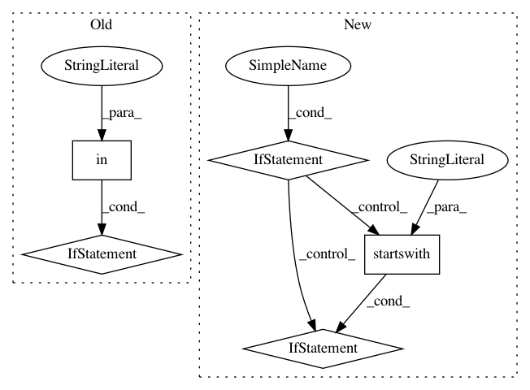

4f804b0e60cefa3048e0a485510a682f7bbaf604,qiskit_aqua/quantumalgorithm.py,QuantumAlgorithm,setup_quantum_backend,#QuantumAlgorithm#Any#Any#Any#Any#Any#Any#Any#Any#Any#Any#Any#,119
Before Change
"wait": wait}
shots = 1 if "statevector" in backend else shots
noise_params = noise_params if "simulator" in backend else None
my_backend = None
try:
my_backend = qiskit.Aer.get_backend(backend)
After Change
Raises:
AlgorithmError: set backend with invalid Qconfig
if backend is None:
raise AlgorithmError("Missing algorithm backend")
operational_backends = self.register_and_get_operational_backends()
if isinstance(backend, str) and QuantumAlgorithm.EQUIVALENT_BACKENDS.get(backend, backend) not in operational_backends:
raise AlgorithmError("This backend "{}" is not operational for the quantum algorithm, \
select any one below: {}".format(backend, operational_backends))
self._qjob_config = {"timeout": timeout,
"wait": wait}
my_backend = None
if isinstance(backend, BaseBackend):
my_backend = backend
else:
try:
my_backend = qiskit.Aer.get_backend(backend)
except KeyError:
preferences = Preferences()
my_backend = qiskit.IBMQ.get_backend(backend,
url=preferences.get_url(""),
token=preferences.get_token(""))
if my_backend is None:
raise AlgorithmError("Missing algorithm backend "{}"".format(backend))
self._backend = my_backend
shots = 1 if my_backend.configuration().get("name", "").startswith("statevector") else shots
noise_params = noise_params if my_backend.configuration().get("simulator", False) else None
if my_backend.configuration().get("local", False):
self._qjob_config.pop("wait", None)
In pattern: SUPERPATTERN
Frequency: 3
Non-data size: 5
Instances
Project Name: Qiskit/qiskit-aqua
Commit Name: 4f804b0e60cefa3048e0a485510a682f7bbaf604
Time: 2018-10-18
Author: manoel@us.ibm.com
File Name: qiskit_aqua/quantumalgorithm.py
Class Name: QuantumAlgorithm
Method Name: setup_quantum_backend
Project Name: WZBSocialScienceCenter/tmtoolkit
Commit Name: 994004cca3b3153cc9c5b2d1ff0f6c4ba1b3cd13
Time: 2020-01-29
Author: markus.konrad@wzb.eu
File Name: tmtoolkit/preprocess/_preprocworker.py
Class Name: PreprocWorker
Method Name: _task_lemmatize
Project Name: gboeing/osmnx
Commit Name: 248fa57af17b42deec9c818eb83aa71e63d50354
Time: 2020-06-08
Author: boeing@usc.edu
File Name: osmnx/io.py
Class Name:
Method Name: _convert_edge_attr_types